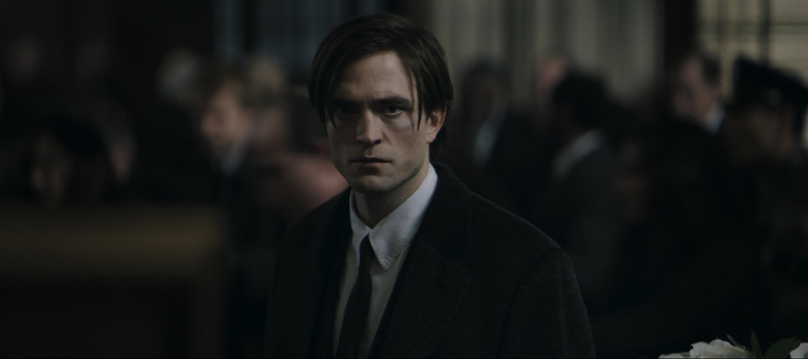
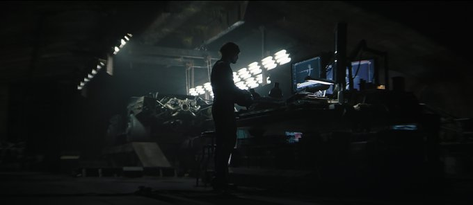
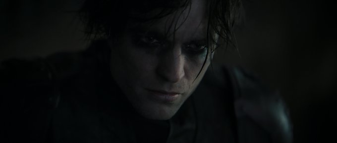

La nueva película centrada en Batman tiene como protagonista a Robert Pattinson y llegará a los cines la primavera del 2022.
La fecha de estreno puede variar pues, según publicó The Hollywood Reporter el jueves, 3 de septiembre de 2020, Warner Bros. Pictures puso en pausa el rodaje de The Batman debido a que Pattinson dio positivo para COVID-19. El actor deberá permanecer aislado y bajo confinamiento hasta que supere la enfermedad y esté en condiciones de regresar al trabajo.
Warner Bros. Pictures presentó el primer teaser de The Batman el sábado, 22 de agosto de 2020, en el evento virtual DC FanDome. El director Matt Reeves explicó que se inspiró en películas de la década de 1970 como Taxi Driver (1976) y The French Connection (1971) para lograr el tono visual de The Batman.
Las primeras imágenes oficiales de Pattinson en el papel de Bruce Wayne/Batman se difundieron el sábado, 22 de agosto de 2020, en el evento virtual DC FanDome.



Todavía se desconoce la trama de The Batman, pero el que Pattinson, de 33 años de edad, haya sido contratado para dar vida al personaje, indica que el filme mostrará los inicios del superhéroe y sus primeros años en la lucha contra el crimen en Ciudad Gótica. Aunque no será una historia de origen: la película mostrará a Bruce Wayne cuando ya asumió la identidad de hombre murciélago.